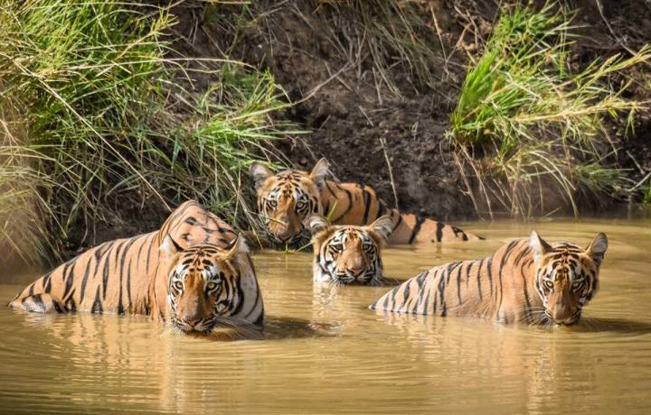

About Tadoba Andhari National Park
Notably Maharashtra's oldest and largest National Park, the "Tadoba National Park" (also known as the "Tadoba Andhari Tiger Reserve") is one of India's prominent Project Tiger reserves. Situated in the Chandrapur district of Maharashtra, it lies approximately 150 km from Nagpur city. The reserve spans a total area of 1,727 sq. km.
Tadoba National Park was created in 1955, while the Andhari Wildlife Sanctuary was formed in 1986 and amalgamated with the park in 1995. The name 'Tadoba' comes from God 'Tadoba' or 'Taru', revered by local tribal communities, while 'Andhari' refers to the Andhari River flowing through this forest.
Park Highlights
- Open Season: Open for visitors from 15th October to 30th June every season (closed full-day on Tuesdays).
- Vegetation: Southern tropical dry deciduous forest covering around 626 sq. km with dominant Teak tree species.
- Top Attraction: Jungle & Tiger Safaris conducted in open-top gypsies.
- Key Wildlife Spotting: High tiger density along with Sloth Bears, Wild Dogs (Dhole), Leopards, and central India's native bird species.
- Forest Ranges: Divided into Tadoba North Range, Kolsa South Range, and Moharli Range. Water bodies include Tadoba Lake, Kolsa Lake, and the Tadoba River.
- Accommodation Gates: Major lodging options are concentrated near Kolara Gate and Moharli Gate.
Rich Flora & Fauna
Flora: Teak, Ain, Bija, Dhauda, Salai, Semal, Tendu, Beheda, Hirda, Mahua, Arjun, Bamboo, Black Plum, and more.
Fauna: Bengal Tigers, Indian Leopards, Sloth Bears, Gaur, Nilgai, Dhole (Wild Dog), Striped Hyena, Sambar, Spotted Deer, Barking Deer, Marsh Crocodile, Indian Python, Grey-headed Fish Eagle, Crested Serpent Eagle, Peacocks, and various species of spiders and beetles.
Why Tadoba is Famous
It is a pristine ecosystem with endearingly rich biodiversity and pristine forest tracks. Recognized as Maharashtra's second tiger reserve, Tadoba is renowned globally for its high tiger sighting probability and exceptional natural heritage.
Best Time To Visit
The winter months (October to March) offer pleasant weather for general tourism. However, the hotter summer months (April to May) are considered best for spotting tigers near water sources. Post-monsoon is also picturesque as the forest turns lush green and full of blooms.
How To Reach
By Air: Nearest airport is Dr. Babasaheb Ambedkar International Airport, Nagpur (~150 km), from where taxis/cabs are easily available.
By Rail: Nearest railway stations are Chandrapur (49 km) and Nagpur Junction (151 km).
By Road: Frequent state transport buses and private taxis run from Chandrapur to Moharli Village.